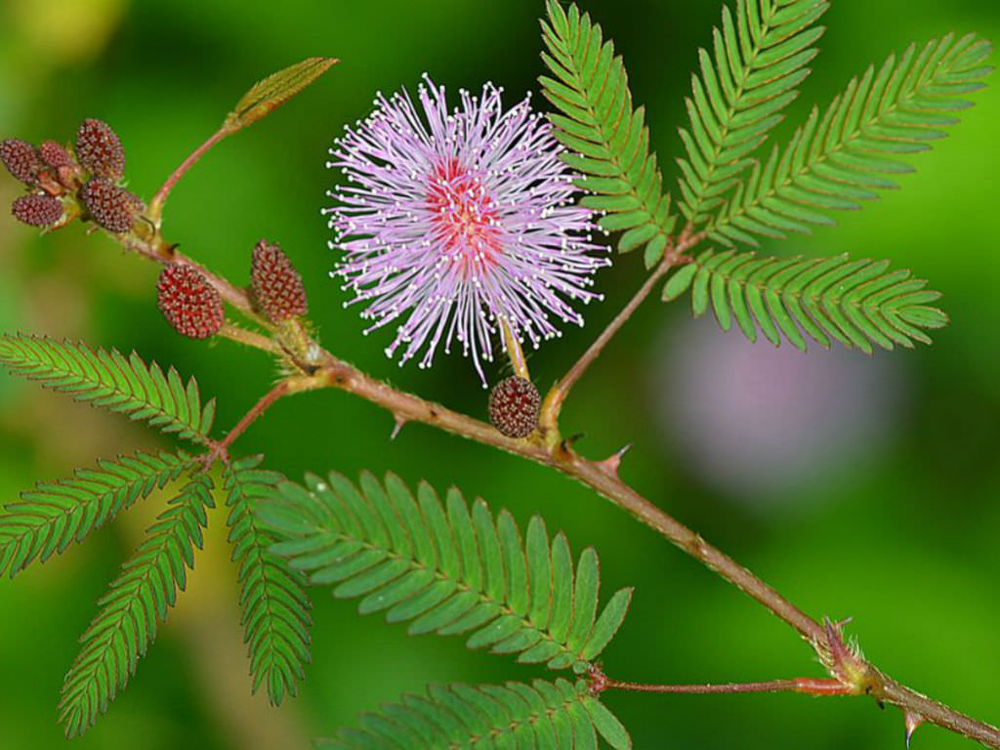

Basonym of Drug
Lajjalu
Main Synonym
- Samnga
- Namskari
- Jalkarika
- Raktapdi
- Khadiraka
- Shamipatra
Regional Name
- Bengali: lajjavati
- Gujarati: lajamani
- Hindi: lajjavanti
- Tamil: tottha churangi
- Telugu: munugu damarugu
Botanical Name
Mimosa pudica
Family
Mimosaceae
Classification (Gana)
- Aacharya Charaka: sandhaniya, purishasangrahaniya
- Aacharya Sushruta: ambasthadi, priyangvadi gana
- Aacharya Vagbhata: priyangvadi gana
External Morphology
A small perennial herb
Useful Parts
Root, whole plant
Important Phytoconstituent
Mimosine, orientine, iso-orientine
Rasa Panchak
- Rasa: kashaya, tikta
- Guna: laghu, ruksha
- Virya: shita
- Vipaka: katu
Action
Kapha-pitta hara
Therapeutic Indication
- Purisha sangrahaniya (anti-diarrheal)
- Yonirogahara (useful in gynecological disorders)
- Raktapittahara (useful in bleeding disorders)
- Jwarahara (anti-pyretic)
Therapeutic Uses
- Atisara - a paste of the root of lajjalu with tanduodak is useful in diarrhea.
- Raktapitta - whole plant juice in both nostrils as nasya treatment is useful in epistaxis.
- Sarpavisha - lajjalu, shalmali, and bilva powder are taken with honey in case of snake-bite.
Dose
Juice: 10-20 ml
Formulations
- Samangadi churna
- Kutaja avaleha
- Lakshadi churna
Adverse Effect
Not Known